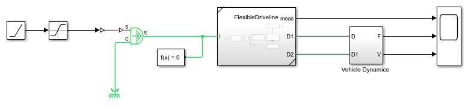
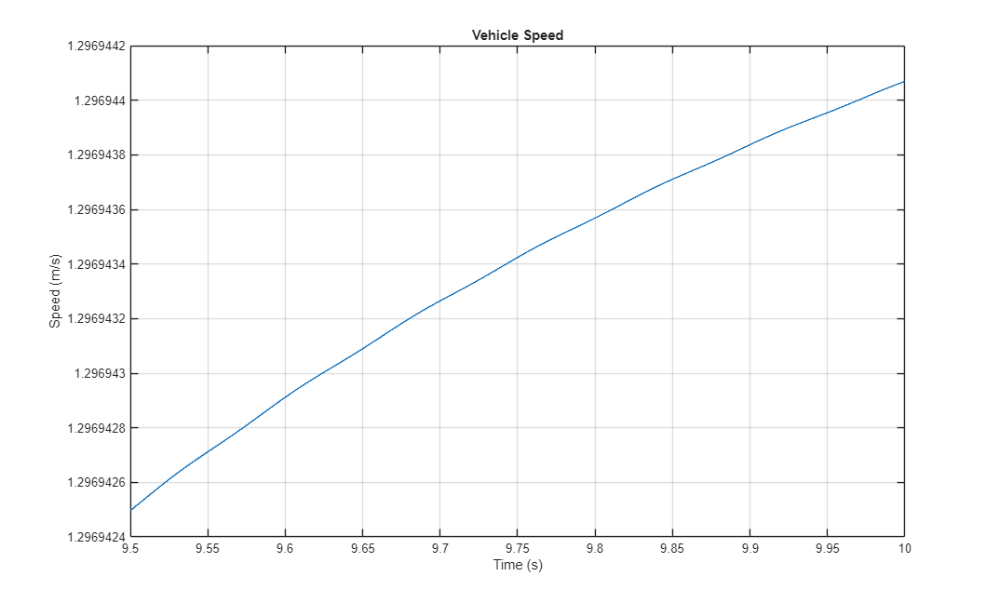
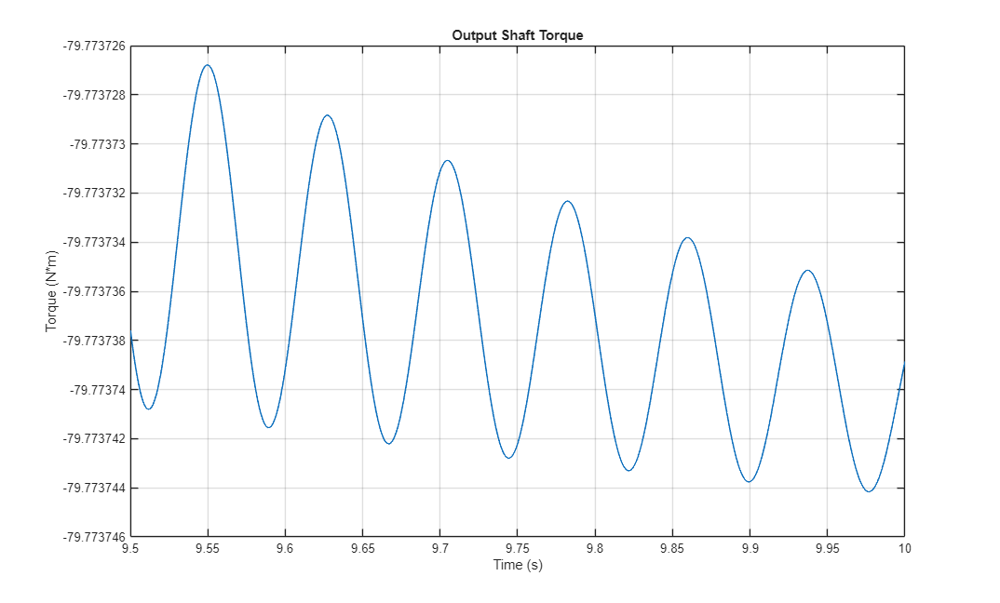
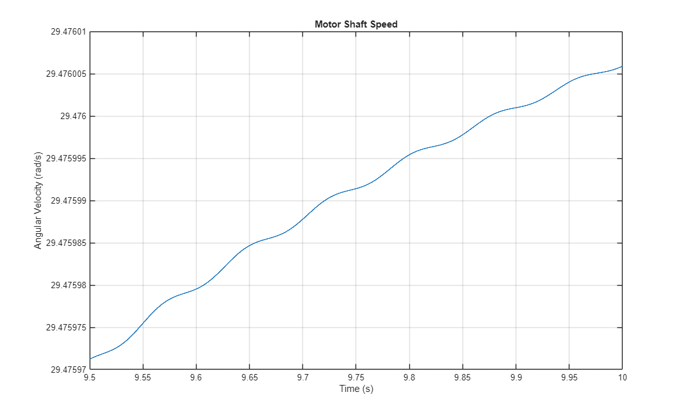

Flexible Driveline Test Harness
Standalone test environment for the FlexibleDriveline component.
Contents
Overview
The FlexibleDriveLineTestHarness provides a standalone simulation environment for validating the flexible driveline. The harness supplies a torque ramp to the motor shaft input and includes a vehicle dynamics subsystem with mass, air drag, and rolling resistance to exercise the driveline through an acceleration maneuver.
The harness references the FlexibleDriveline subsystem, which includes gear backlash, flexible counter shafts, bearing friction, and motor torsional vibration modes. Parameters are initialized by FlexibleDriveLineTestHarnessParams.m.
Harness: FlexibleDriveLineTestHarness.slx
Parameters: FlexibleDriveLineTestHarnessParams.m
Fidelity: FlexibleDriveline
Setup
Load parameters and open the test harness.
model = 'FlexibleDriveLineTestHarness';
FlexibleDriveLineTestHarnessParams;
open_system(model)
model = 'FlexibleDriveLineTestHarness';
FlexibleDriveLineTestHarnessParams;
open_system(model)

Run Simulation and Results
simout = sim(model, 'SrcWorkspace', 'current');
simout = sim(model, 'SrcWorkspace', 'current'); simlog = simout.simlogMechanicalDLTorsion;
Vehicle Speed
vSeries = simlog.Vehicle_Dynamics.Vehicle_mass.v.series; figure plot(vSeries.time, vSeries.values, 'LineWidth', 1.2) title('Vehicle Speed') xlabel('Time (s)'); ylabel('Speed (m/s)') grid on snapnow; close(gcf)

Output Shaft Torque
tSeries = simlog.Subsystem_Reference.Mechanical_sensor.Ideal_Torque_Sensor.T.series; figure plot(tSeries.time, tSeries.values, 'LineWidth', 1.2) title('Output Shaft Torque') xlabel('Time (s)'); ylabel('Torque (N*m)') grid on snapnow; close(gcf)

Motor Shaft Speed
wSeries = simlog.Subsystem_Reference.Mechanical_sensor.Ideal_Rotational_Motion_Sensor.W.series; figure plot(wSeries.time, wSeries.values, 'LineWidth', 1.2) title('Motor Shaft Speed') xlabel('Time (s)'); ylabel('Angular Velocity (rad/s)') grid on snapnow; close(gcf)
